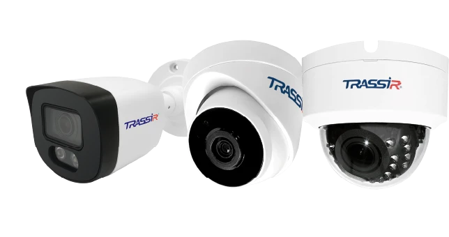
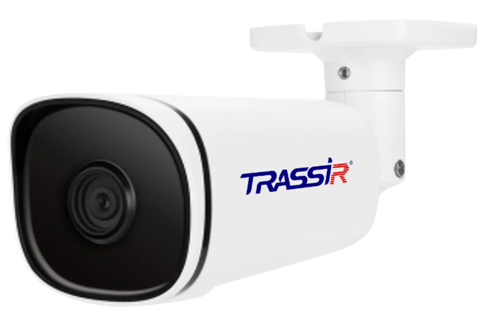
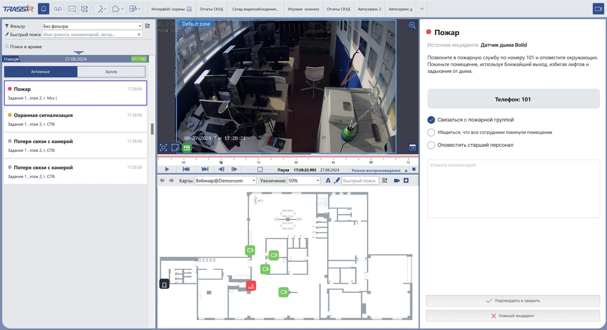
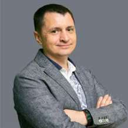

R&D центры
Собственный центр разработки и исследований решений для систем видеонаблюдения
О компании
Проектируем, производим и поддерживаем, чтобы работало


TRASSIR — это ядро комплексных систем ИИ-безопасности. Инженерная платформа, которая объединяет оборудование и программное обеспечение в единую архитектуру, где в базовых моделях уже доступен сильный функционал.
Камеры, видеорегистраторы программное обеспечение, видеоаналитика, СКУД, облачные сервисы и сетевое оборудование
— все элементы работают в одной системе и интегрируются с решениями других вендоров.

Камеры видеонаблюдения Видеорегистраторы
Видеорегистраторы СКУД
СКУД Сетевое оборудованиеСистема управления видеонаблюдением (VMS)
Сетевое оборудованиеСистема управления видеонаблюдением (VMS)
Центр управления тревогами (TRASSIR PSIM) Мониторинг системы видеонаблюдения (TRASSIR CMS)
Мониторинг системы видеонаблюдения (TRASSIR CMS) Видеоаналитика
Видеоаналитика Облако и сервисы
Облако и сервисыШирокий модельный ряд с собственной аналитикой, продвинутой оптикой, высокой детализацией и стабильной работой в любых условиях.
Серверы под задачи любой сложности. Высокая производительность, резервирование, поддержка аналитики.
Контроль, управление доступом и аналитика. Единый контур безопасности.
PoE-коммутаторы, SFP-модули и сетевые решения, оптимизированные под видеонаблюдение, повышенная надежность и температурная устойчивость.
Централизованное управление видеосистемами любого масштаба. Масштабируемость, отказоустойчивость, гибкие сценарии управления, аналитика. Интеграция с продуктами сторонних производителей.
Обработка тревог от разных систем безопасности в едином интерфейсе. Приоритеты событий, видео и карты, инструкции для операторов. Контроль реагирования и отчеты о действиях сотрудников.
Централизованный мониторинг состояния камер и серверов на всех объектах. Уведомления о сбоях, отчеты о работоспособности, удаленное управление и обновление серверов. Работа в частном облаке компании.
Распознавание лиц и номеров, контроль перемещения, подсчет людей, обнаружение инцидентов, аналитика для бизнеса. Работает на серверах и в облаке.
Удаленный доступ, облачное хранение до 90 дней, поддержка камер от 3 месяцев. Расширение функционала.
Собственное производство полного цикла на территории Российской Федерации
2002–2005
2006–2009
2010–2015
2016–2021
2021–2025
Сделано в России
Надежное оборудование. Контроль качества. Поставка под задачи.

Собственный центр разработки и исследований решений для систем видеонаблюдения
Сборка оборудования и контроль качества продукции
Продукция соответствует требованиям ГОСТ и ТУ, проходит многоступенчатый контроль качества и тестирование на каждом этапе сборки.
Сборка объективов камер происходит в чистой комнате со специальными условиями
Камеры проходят автоматическое тестирование
Каждое устройство проходит длительное тестирование на стабильность работы
Тестирование новых моделей по ГОСТ и требованиям заказчиков.
Предсерийная сборка тестовой партии перед запуском в серию.
Проверка и настройка оборудования в чистой комнате.
Проверка герметичности и устойчивости к перепадам температур.
Нагрузочное тестирование.
Контроль качества перед отгрузкой.
«Меня всегда увлекали передовые технологии и инженерные разработки. И на протяжении многих лет я воспринимал внутреннее стремление познавать и открываться новому, как прекрасную возможность воплощать свои смелые идеи в жизнь. Именно желание экспериментировать и умение нестандартно подходить к решению задач стали ориентирами, с которыми компания сегодня движется по пути достижений, успехов и открытий. Благодаря потрясающей команде опытных разработчиков, профессиональных экспертов и обширной сети надёжных партнеров, мы добиваемся превосходных результатов и продолжаем расширять присутствие бренда TRASSIR в России и на международном рынке.»

(заглушка под блок с призывом к действию)